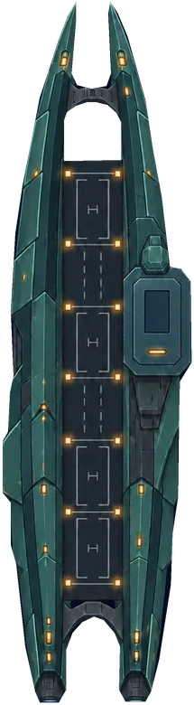

Free People · Independent vessel
Crosswind
Crosswind-class flight-deck frigate · Captain Nessa Rourke
Crosswind · Top view

Frigate loadout
Equipment manifest · inspection only
- Engine
- Not configured
- He3 generator
- Not configured
- Power storage
- Not configured
- Weapons and turrets
- Not configured
- Shield system
- Not configured
Crosswind has an independent equipment manifest. Red Grin's pirate weapons are not inherited by this vessel.
Flight deck
- Exterior fighter pads
- 4
- Hull length
- 350 units